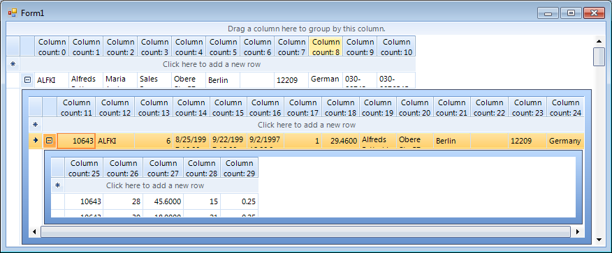

Accessing and Iterating through Columns
Accessing Columns
You can access a column by name or index. Generally speaking, accessing the columns by name is the preferred approach because if the
user reorders the columns the indexes would also change.
For example, the code snippet below sets the width of an image column named "Picture" to 110:
[C#] Accessing RadGridView columns
((GridViewImageColumn)this.radGridView1.Columns["Picture"]).Width = 110;
[VB.NET] Accessing RadGridView columns
DirectCast(Me.RadGridView1.Columns("Picture"), GridViewImageColumn).Width = 110
Iterating through Columns
You can iterate through grid columns by using the Columns collection of GridViewColumn objects. The example below cycles
through the columns of the grid, it first determines if the column is a GridViewDataColumn type, and then sets each column’s HeaderText with
the number of the current column:
[C#] Iterating through RadGridView columns
int i = 0;
foreach (GridViewColumn column in radGridView1.Columns)
{
if (column is GridViewDataColumn)
{
GridViewDataColumn col = column as GridViewDataColumn;
if (col != null)
{
col.Width = 90;
col.HeaderText = "Column count : " + i.ToString();
i++;
}
}
}
[VB.NET] Iterating through RadGridView columns
Dim i As Integer = 0
For Each column As GridViewColumn In RadGridView1.Columns
If TypeOf column Is GridViewDataColumn Then
Dim col As GridViewDataColumn = TryCast(column, GridViewDataColumn)
col.Width = 90
col.HeaderText = "Column count: " + i.ToString
i = i + 1
End If
Next
The result from the code above is displayed on the following image:
Iterating through Hierarchical Columns
Iterating through hierarchical RadGridView is possible by iterating through the Columns’ collection of each RadGridView
template (each template represents one level of hierarchy).
[C#] Iterating through hierarchical RadGridView columns
private void AccessingAndIteratingThroughColumns2_Load(object sender, EventArgs e)
{
this.order_DetailsTableAdapter.Fill(this.nwindDataSet.Order_Details);
this.ordersTableAdapter.Fill(this.nwindDataSet.Orders);
this.customersTableAdapter.Fill(this.nwindDataSet.Customers);
radGridView1.AutoGenerateHierarchy = true;
radGridView1.DataSource = this.nwindDataSet;
radGridView1.DataMember = "Customers";
int count = 0;
foreach (GridViewDataColumn dataColumn in this.GetAllColumns(this.radGridView1.MasterTemplate))
{
dataColumn.WrapText = true;
dataColumn.HeaderText = "Column count: " + count++;
}
}
public List<GridViewDataColumn> GetAllColumns(GridViewTemplate template)
{
List<GridViewDataColumn> allColumns = new List<GridViewDataColumn>();
allColumns.AddRange(template.Columns);
foreach (GridViewTemplate childTemplate in template.Templates)
{
List<GridViewDataColumn> childColumns = this.GetAllColumns(childTemplate);
allColumns.AddRange(childColumns);
}
return allColumns;
}
[VB.NET] Iterating through hierarchical RadGridView columns
Private Sub AccessingAndIteratingThroughColumns2_Load(ByVal sender As System.Object, ByVal e As System.EventArgs) Handles MyBase.Load
Me.Order_DetailsTableAdapter.Fill(Me.NwindDataSet.Order_Details)
Me.OrdersTableAdapter.Fill(Me.NwindDataSet.Orders)
Me.CustomersTableAdapter.Fill(Me.NwindDataSet.Customers)
RadGridView1.AutoGenerateHierarchy = True
RadGridView1.DataSource = Me.NwindDataSet
RadGridView1.DataMember = "Customers"
Dim count As Integer = 0
For Each dataColumn As GridViewDataColumn In Me.GetAllColumns(Me.RadGridView1.MasterTemplate)
dataColumn.WrapText = True
dataColumn.HeaderText = "Column count: " & System.Math.Max(System.Threading.Interlocked.Increment(count), count - 1)
Next
End Sub
Public Function GetAllColumns(ByVal template As GridViewTemplate) As List(Of GridViewDataColumn)
Dim allColumns As New List(Of GridViewDataColumn)()
allColumns.AddRange(template.Columns)
For Each childTemplate As GridViewTemplate In template.Templates
Dim childColumns As List(Of GridViewDataColumn) = Me.GetAllColumns(childTemplate)
allColumns.AddRange(childColumns)
Next
Return allColumns
End Function
